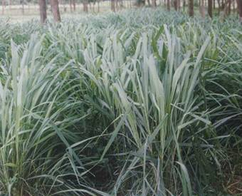

HORT 282 :: Lecture 09 :: CITRONELLA

CITRONELLA
(Cymbopogon winterianus, Poaceae)
Citronella oil is an essential oil containing citronellal, geraniol and hydroxy citronellol and other high value perfumery bases obtained on steam distillation of citronella grass. In Assam production of citronella oil has gone down from 450-500 MT/year in 1986 to less than 100 MT/year mainly due to the following reasons:
- Shift to tea cultivation when tea price was remunerative
- No technological up gradation neither in varietal development nor in oil extraction techniques.
- No quality monitoring as a result of large-scale adulteration gave negative impact to the NE region’s products.
- Globalization in trading resulting tough competition with China that produces quality products at lower cost.
- No extension support and marketing networking.
- Optimization of synthetic equivalent derivatives from petrochemicals and turpentine that could partly replace the derivatives ex-citronella oil.

However, its increasing applications in various fields and gradual shift to natural from synthetic have changed the total scenario and again the demand of natural source is increasing. Very high cost of production in the past can be brought down by increasing yield per unit area/unit time and by efficient steam distillation units.
It may be estimated that the global demand could exceed 6500 MT/year replacing partly the synthetic equivalents. At present about 1800 MT is being produced in the world out of which India produces about 600 MT/year. Presently the major producers are China, Vietnam, Indonesia, Argentina, Taiwan, Srilanka, Brazil, Madagascar and India. The oil is used for perfuming soaps, detergents, cosmetics, agarbattis and for making mosquito repellent creams. The oil is also used to isolate citronellol, geraniol. These are in turn converted into citronellal, hydroxy citronellal, synthetic menthol and esters of geraniol and citronellol. These compounds are used for making high grade blended perfumes. Extension of high yielding and high citronellal rich variety is need of the hour and can create big market. The crop grown in NE region is aldehyde rich therefore; it may regain its lost image in the global market.
Soil and climate
Citronella grows well in Assam where there is abundant sunshine and high humidity (70 % and above). Temperature range between 200C to 380C and well-distributed rainfall of 2000-3000 mm are desirable but if irrigation is available citronella can be cultivated in regions of low rainfall also (rain shadow belt).
Citronella grows best in sandy loam soils. Heavy clayey soils, which tend to water log and light sandy soils are not suitable for this crop. It does not tolerate water stagnation. A good amount of organic matter is desirable. The ideal pH range is 5.0-7.0. Soil testing is important for best fertility management and higher productivity.
Land preparation
The land is prepared to fine tilth. Organic, P and K fertilizers are mixed into the soil at this stage. In plains ridges are made at 45 cm apart. Apply at last ploughing 25-30 tons FYM or well decomposed crowding and mixed with the soil. At this time 1.25 kg Semazine or 1.25 kg Diuron in 1250-1500 litre water or 625 g Oxyflorofen or any suitable pre-emergence herbicide may be applied at least 15 days before planting.
Preparation of slips
Citronella is propagated by splitting the clumps of vigorously growing plant of 6-months to one year old into slips. The clump is gently dug out and separated into number of slips containing 2- 3 tillers/slip. The fibrous roots and leaves are trimmed off at 25 – 30 cm height before planting. One-year-old clump on an average, gives about 50 slips.
Varieties
Jor lab C-2 released by RRL, Jorhat is recommended. It is advisable to procure breeder material for multiplication from RRL, Jorhat or diseased free material from any dependable sources. For Brahmaputra plains where excess moisture and occasional water stagnation are likely Jalpallavi (a CIMAP variety) is better choice. Its oil content is low about 0.5 –0.6% but its herb yield is much higher.
Time of planting
The ideal planting time is the beginning of monsoon (May-June). Late planting after July may result heavy casualty. Under irrigated condition March-April is also suitable when there will be low weed growth.
Planting
The slips are planted at 45 x 45 cm in plain land at 5-8 cm depth on one side of the ridges half way up the slope in plains or 60 x 45 cm in sloppy land. One slip is inserted in each pit, latter filled with loose soil and firmly pressed keeping the slip vertical. The soil moisture is maintained till the crop establishes. Casualty should be replaced within the next month. 40,000 slips are required to plant one-hectare area.
Closure spacing at planting
Planting may be done at closure spacing at 45 x 22.5 cm and after first harvest every alternate plant from the row is uprooted and used as planting material. This gives good harvest in the first cutting and helps in keeping down the weed problems due to higher plant population. The grass can be intercropped with arecanut and also coconut in the initial 3-4 years of growth as these crops attain bearing stage after about 6-7 years.
Growth
If properly planted about 90% survival is obtained. Plants get established within 15-20 days and after 30-40 days complete green colour appears in the field. During this time a light irrigation should be applied in absence of rainfall.
Interculture
As the crop is planted during monsoon it faces serious weed competition in the initial stages and upto 60 days is found to be critical period. Generally two weedings one at 20-25 and another at 40-45 days after planting should be done. Interculture after each harvest is necessary. In order to get satisfactory results, an integrated method that consists of hand weeding, application of Weedicides and mulch should be used.
Mulching
The spent material (grass after distillation) should be applied as mulch in between the two rows @ 3 tons/ha.
Fertilizer application
For poor and medium fertility soil N, P205, K20 @ 200:80:75 kg/ha/year should be applied. In the first year the organic, P and K fertilizers are mixed into the soil at final land preparation. Nitrogen should be applied at 4 equal splits (@ 50 kg N) in the first year- first application at about one month after planting with weeding and rests after each harvest. In subsequent years the basal dose may be applied along with the first dose of N. N as urea is top dressed soon after the regenerated crop is established and thereafter once in every two months. In the subsequent years N dose may be increased by 50 kg for the additional split application.
During rainy season crop may suffer iron deficiency leading to leaf chlorosis resulting decrease in yield and oil quality. This may be rectified by spraying 0.25% ferrous Sulphate solution at 10-15 days intervals for 3-4 times.
Irrigation
Citronella requires sufficient moisture for good growth and yield of herb. When there is no rain, irrigation once in 10-15 days will be required. For undulating areas sprinkler irrigation is suggested. Irrigation increases aldehyde content in oil besides herb yield.
Plant Protection
Diseases
Most important disease is leaf blight or Carbularia leaf blight caused by Carbularia eragrostidis. This can be controlled by Carbendazim (Bavistin at 1.0g/liter) followed by Benomyl of Benzimidazole group (Benlate 50 wp) @0.2% at 10 days interval.
Insect-pests
During dry season the crop may be affected by yellowing and crinkling disease (due to mites). The emerging leaves become wrinkled and pale. It may fail to open and the part may die. This may be controlled by spraying a mixture of Docofol (Kelthane) @ 2 ml/lit and Ethion (Tafethion, 50 EC) @ 1 ml/lit along with a wetting agent like Triton AE or Enditron AE @ 0.5 ml/lit. In the subsequent years stem borer and in rainfed condition termite may infest the crop. These can be controlled by applying Furadan @ 20 kg/ha or by spraying 0.5 % Dimethoate 400 to 500 kg Neem oil cake. The crop sometimes may show yellowing of growing leaves indicating a mixed deficiency of Zinc, Molybdenum and Sulphur. Two or three foliar sprays of a complete micro-nutrient mixture at fortnightly intervals are sufficient to combat the deficiency.
Harvesting
It is advisable to harvest (a partial harvest) after 3 months to induce tillering. In the first year only 3 cuts besides the partial harvest can be taken, viz., 5 months after planting and 3 months after the previous harvest. From second year onwards, 5-6 harvests can be taken per year at 2 months intervals. Harvesting is done by sickle and cut at 15 cm above the ground. Cutting close to the ground results into mortality of the plant. Harvesting preferably is done before 12 O’clock.
Crop cycle:
The crop can be maintained economically for about 4 years. Then it is to be pulled out and plant with rotational crop. After termination of the crop green manuring can be done.
Withering of the fresh herb
After cutting, the herb is allowed to wilt for 12-24 hours to remove the excess moisture. This wilting allows better packing in the vessel and saving of steam and fuel. Wilting more than 24 hours results loss of essential oil. Cutting the grass into shorter length also gives 10-15 % higher recovery. The harvested grass contains dead leaves, sheaths that should be removed before packing into the vessel.
Distillation of oil
The grass is steam distilled for better recovery. The distillation equipment consists of a boiler, a distillation vessel, a condenser and two receivers / separators. The economic capacity of the unit is 1.0 ton/batch. In hilly areas small size (6-8 q) direct-fired field units are preferred. Preferably the unit should be of stainless still for durability and oil quality. Growers cultivating smaller areas can use properly designed direct-fired field distillation units. Distillation is completed within 3 hours under normal pressure starting from the initial condensation of the oil. Prolong distillation deteriorates oil quality.
The trend of oil recovery is as under-
Distillation time % of the total oil recovery
First hour - 80 %
Second hour - 19 %
Third hour - 1 %
Larger percentage of the major components about 80% in the total oil, such as citronellal, geraniol, citronellol and geranyl acetate is recovered in the first hour of distillation.
Yield
The partially wilted herb yield is in the range of 20-30 t/ha. The average oil recovery is 1 %. Hence the oil yield is about 200-300 kg/ha/year. A crop under average management should not yield less than 200 kg oil/ha/year.
************
- Botanical name of citronella is ____________
- Citronella is propagated by splitting the ___________
- What are the major components of citronella oil ___________
- Mention two types of citronella species?
- Percentage of oil recovery in citronella?
| Download this lecture as PDF here |